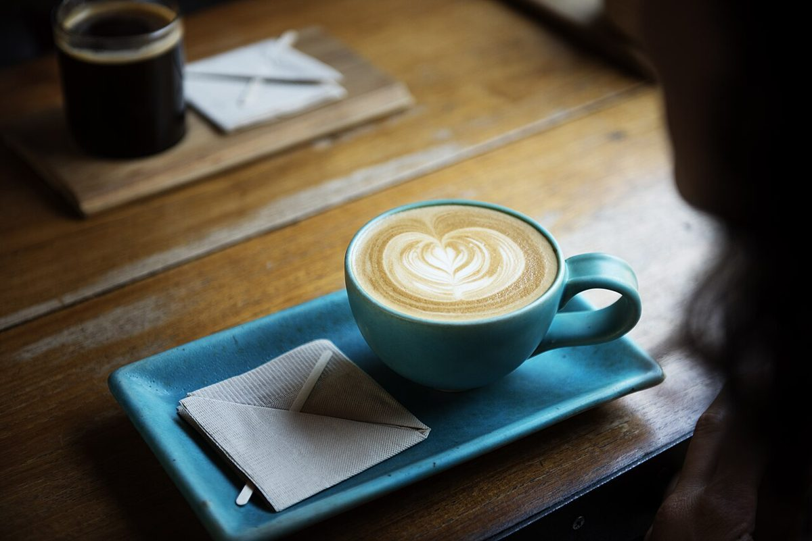

場面: 海を見に行った日
銚子まで海を見に出かけた日のことです。帰る前に、どこか甘いものを食べて一息つける場所はないかと探しました。急がなくていい時間がうれしかったです。
掲載写真はフリー素材のイメージです。店舗の実際の様子ではありません。他地域で撮影されたもの、撮影地が不明なものを含みます。

VOICE
このページの口コミは、制作見本として作成したイメージ例です。実際のお客様の声ではありません。
銚子まで海を見に出かけた日のことです。帰る前に、どこか甘いものを食べて一息つける場所はないかと探しました。急がなくていい時間がうれしかったです。
Instagramの写真を眺めていて、行ってみたくなりました。写真を見て気になったお店へ足を運ぶのは、それだけで小さな楽しみになります。
出かける前に、気になることを電話で聞いてみました。事前に確認できたので、安心して向かうことができました。
営業時間やメニューは準備中です。お問い合わせはお電話またはInstagramから。